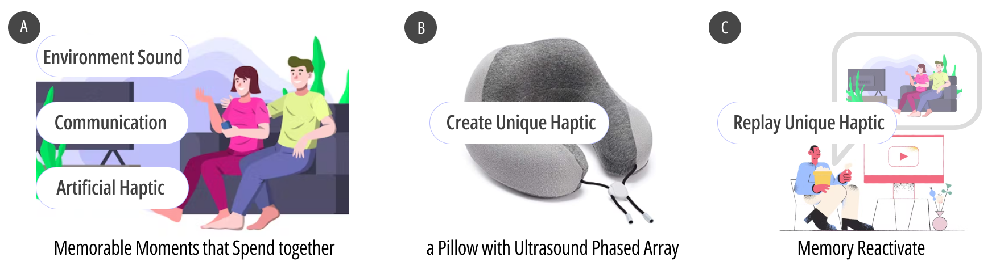
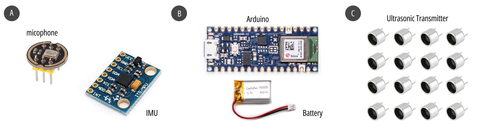
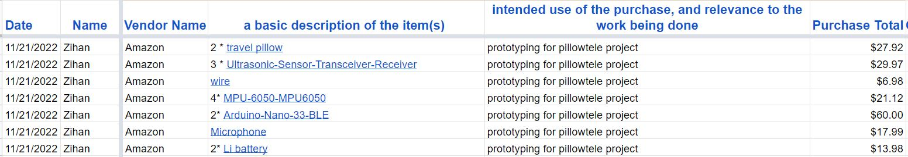

PillowTele
Pillows with Ultrasound Phased Array for Collective Memories Augmentation in Remote
The act of recalling is an important element of many interpersonal activities, especially for people who have close relationships but do not live in the same physical space. When recalling, sharing, and reviewing memories of life experiences, people often use a variety of objects as memory Aids. Most memory carriers are in the form of sound, photos and video. For example, a couple who has been apart for a long time might look at photos from the time while talking on the phone and reminisce about the good times they embraced.
However, The emotional atmosphere of the ecstasy moment in an intimate relationship is said to be tangible with the feeling of touch. Moreover, in this kind of moment, language is sometimes too pale to convey the inner feelings and the love towards the loved person. In this case, there is a missed opportunity to use a haptic way to record the shared moment and share the feeling of missing when being apart.
In this case, we present a haptic pillow with three ultrasound-phased arrays that can encode the shared moment into haptic feedback. Specially, we assume that there will be three main kinds of information: 1) the sound from the environment (e.g., movies, music, the noise of the scenes); 2) the spoken communication of human-human; and 3) the non-spoken communication such as body language. Considering the nature of the sound is also the wavelength that can be encoded into haptic feedback, we use one ultrasound-phased array to encode one kind of the main information. When they are apart, one person can click the button to trigger another person's pillow to give the pre-saved haptic feedback to trigger the past memory.
  Specially, we used IMU to sense the body movement and used the micophone to record the sound (e.g., sound from the enviorment, chatting voice), and then use ultrasonic transmitter to give feedback.